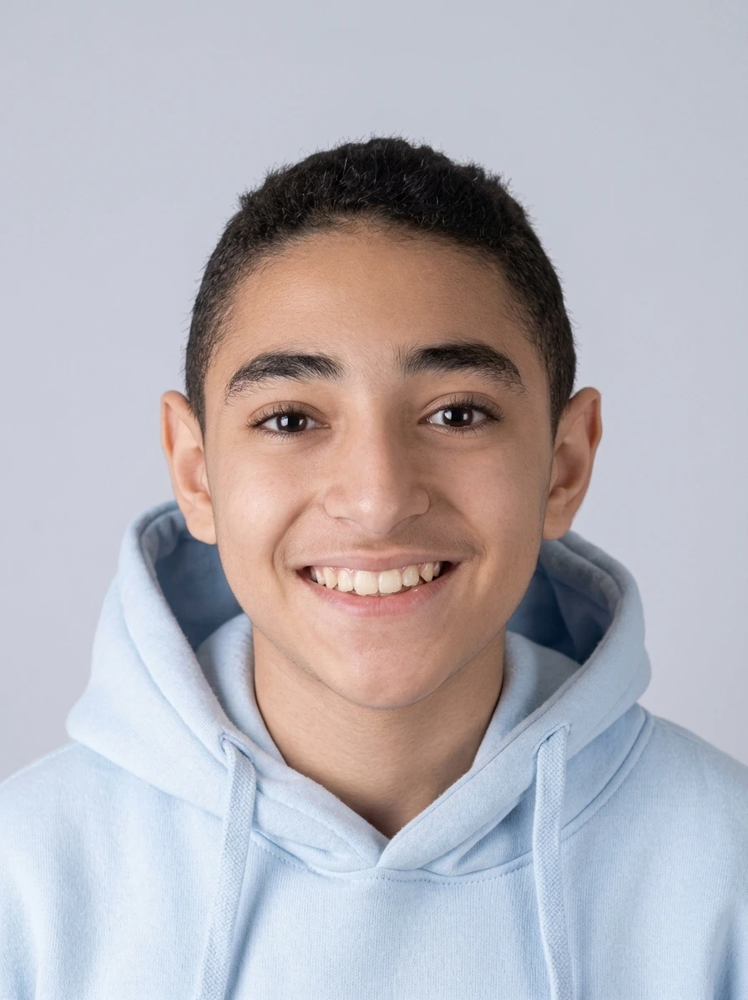

01The person behind the pixels
Hi, I'm
Moaaz.
A frontend developer and creator from Egypt who cares about how a digital product feels, not only how it works.

MOAAZ SALAH / 202602The approach
Code is the material.
Experience is the craft.
I like interfaces with a point of view. Clean structure, strong typography, purposeful motion and details that reward a second look.
My portfolio is a growing lab of real frontend builds — from boutique brands and hotels to clinics, travel concepts and automotive experiences.
03Toolkit
HTMLCSSJavaScriptResponsive UIMotionUXAccessibilityGitCreative Direction
04Based in
Based in
Egypt.
EGYPTCAIRO · 30.0444° N / 31.2357° E